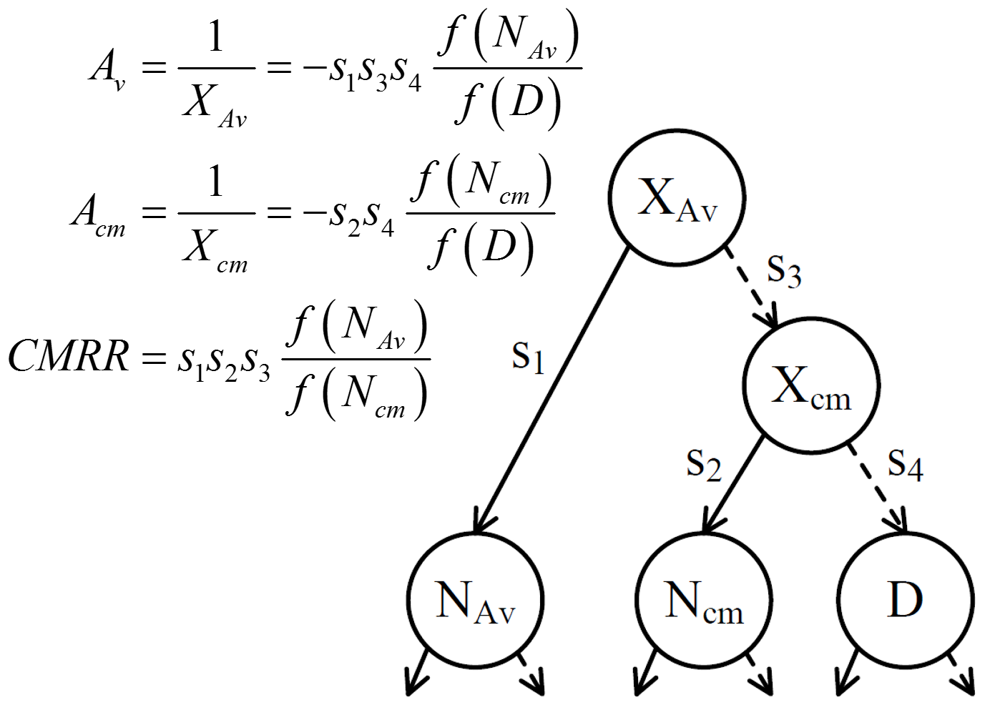
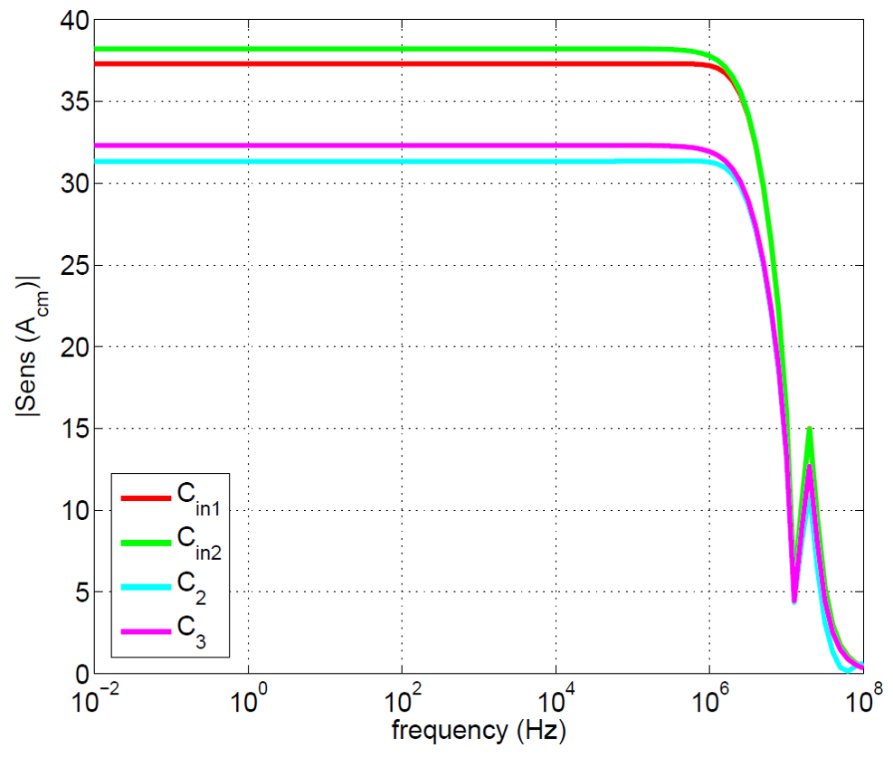
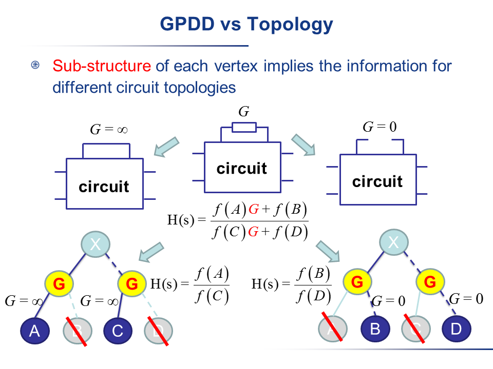
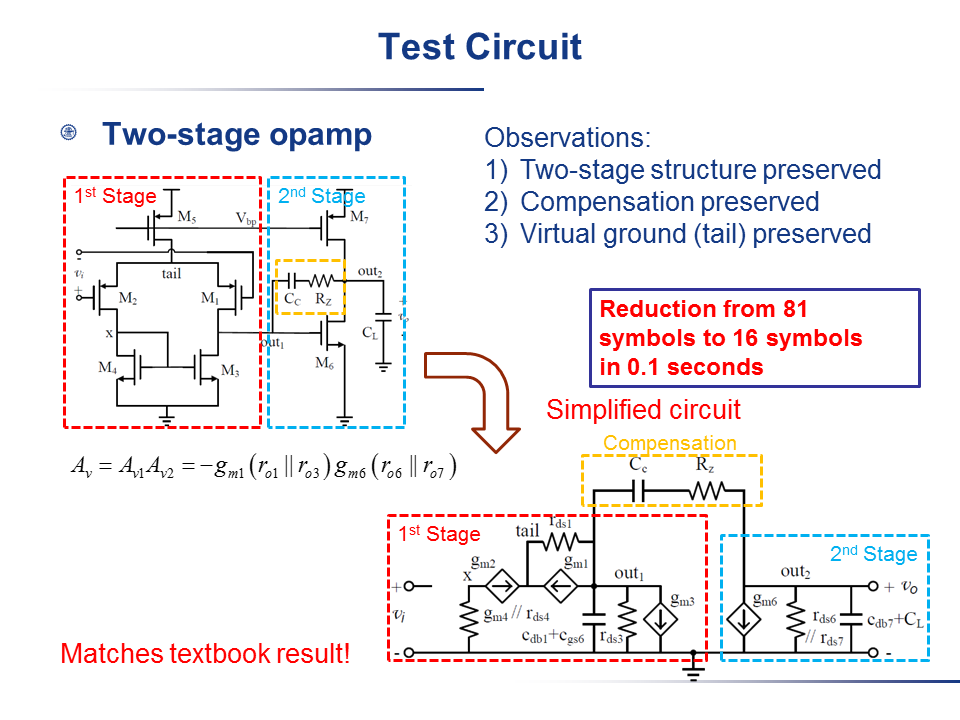
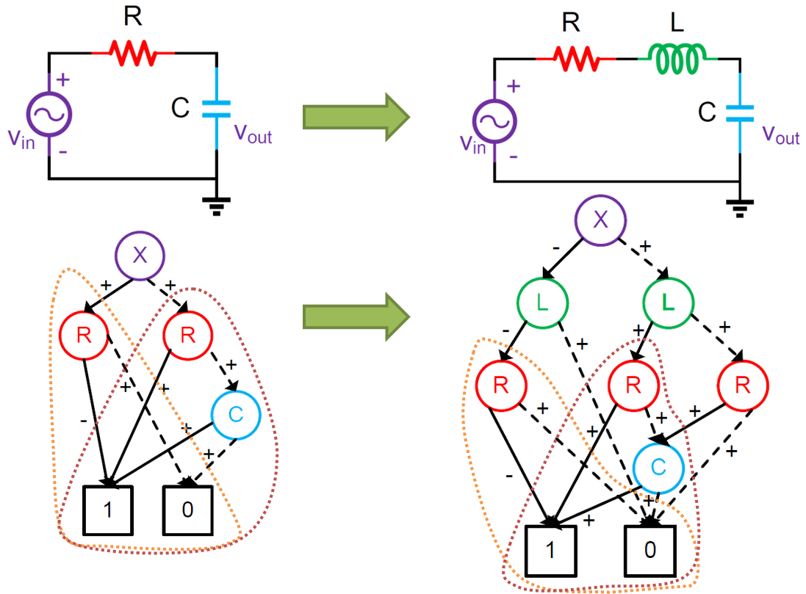
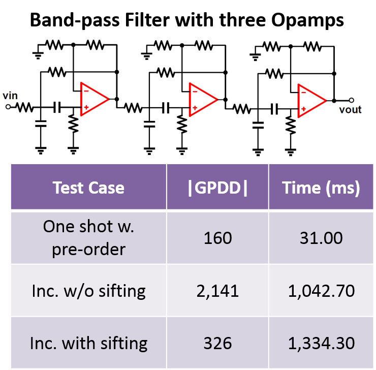
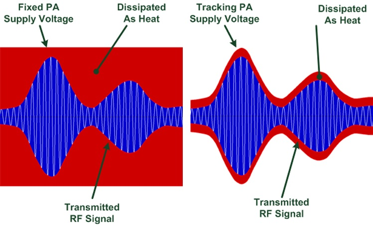
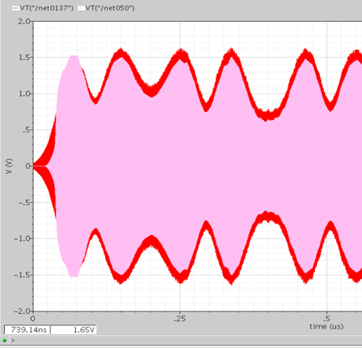
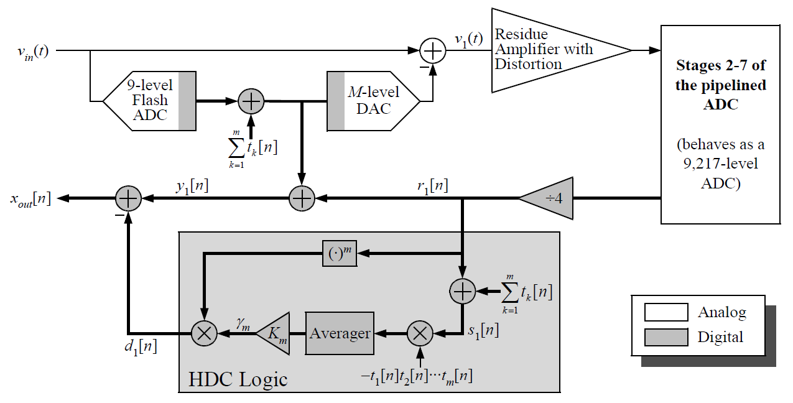

Symbolic Sensitivity Method for Mismatch Analysis and CMRR Improvement
March 2015 - October 2015
Goal: Mismatch and Common Mode Rejection Ratio (CMRR) are becoming a concern in biopotential signal processing circuits in the application of weak signal acquisition using low-power and low-voltage design techniques.
Proper tools are needed to quickly locate the sensitive mismatch components to improve the matching quality and CMRR.
This work proposed a symbolic sensitivity based technique that can help quickly localize the mismatch-sensitive components and suggest intuitive guide for resizing.
[PDF]
- Proved the symbolic construction condition for multiport analysis in Graph-Pair Decision Diagram (GPDD) based on Binary Decision Diagram (BDD).
- Reduced memory consumption for the GPDD structure by 50% on average and shortened the symbolic construction time by 3-4 times, using a multi-port symbolic construction approach.
- Applied symbolic sensitivity computation to recognize most sensitive circuit elements to mismatch, instead of using the time-consuming Monte-Carlo analysis.
- Optimized CMRR performance by means of sensitivity observation of peripheral capacitors, and reduced the mismatch due to parasitic elements in an operational amplifier.

BDD structure for CMRR calculation.

Sensitivity results for a two-stage opamp with unity feedback.
Topological Symbolic Simplification Algorithm for Analog Circuits
March 2014 - June 2014
Advisor: Prof. Guoyong Shi
Goal: Symbolically generated network functions for an analog integrated circuit are complicated in general.
For this reason a variety of simplification methods have been proposed in the literature.
In this work a novel topology-based symbolic simplification method was proposed, which was capable of systematically and automatically generating a simplified small-signal circuit together with a simplified symbolic network function.
[PDF]
[Slides]
- Proposed a topological symbolic simplification algorithm for analog circuits by automatically providing an interpretable simplified circuit topology for operational amplifier analysis; validated and experimented on a symbolic simulation engine.
- Built the relationship between GPDD data structure and circuit topology by two types of elimination operation on symbols.
- Obtained matching topologies automatically; compared to methods given in classical analog circuit textbooks, cut down nearly 80% symbols in original circuits.

Two types of elimination operation on GPDD.

Test result for topology simplification.
Incremental Symbolic Construction for Analog Circuit Topological Modeling
October 2012 - June 2013
Advisor: Prof. Guoyong Shi
Goal: Symbolic methods for analog circuit analysis and modeling have been well studied.
However, little is known on how to create symbolic models incrementally while a circuit topology is being modified.
This work proposed an incremental symbolic construction method applicable to incremental circuit topology change based on GPDD.
[PDF]
[Slides]
- Developed a GPDD simulation engine to symbolically compute small-signal transfer function.
- Implemented an efficient symbolic modification algorithm for GPDD based on symbol limit value when adjusting the circuit topology.
- Proposed symbol reordering and novel sign reduction algorithms to significantly reduce memory consumption of the BDD structure by about 40% in the experiment.

Incremental construction example.

Sifting effect by symbol reordering.
Envelope Tracking Techniques Used in RF Power Amplifier
November 2011 - October 2012
Partner: Jingyang Zhu and Bicheng Ying
Goal: With the development of wireless communications, high-efficiency power amplifiers (PAs) have become more and more important in portable electronic instrument.
The work focused on the envelope tracking techniques implementing on a “Class AB” PA with the OFDM 802.11 input to improve its average efficiency.
[PDF] (Chinese Version)
- Built the mathematic model for envelope tracking principle in Simulink and verified the system.
- Designed a folded-cascode operational transconductance amplifier (OTA) with a GBW of 35.8MHz and a phase margin of 58° used in envelope tracking system.
- Integrated all the building blocks in the envelope tracking system, and verified the whole system by SpectreRF simulation.

Envelope tracking principle.

Envelope tracking experimental result.
Modeling and Calibration of High Speed, High Resolution ADC
October 2010 - November 2011
Goal: Analog-to-Digital Converter (ADC) is the key building block in many modern signal processing system, such as: wireless communication system and image acquisition system.
The work established a system model of high speed and high resolution ADC with Simulink. Meanwhile, the project realized a harmonic distortion calibartion (HDC) algorithm.
[PDF] (Chinese Version)
- Studied the fundamental ADC background, especially the knowledge about the sampling theory and the pipeline ADC structure.
- Built a Simulink model for a 14-bit 100MHz-sampling-rate pipeline ADC with redundant sign digit (RSD) correction with an SNR Measurement block, a noise generation block, and an HDC algorithm block.
- Verified and reproduced the harmonic distortion calibration algorithm for 3rd-order distortion at system level.

Harmonic distortion calibration algorithm.